Home / Docs / Episode 5 · THE BLOOD
Production notes
Episode 5 · THE BLOOD
Book 11 in grey, where the only colour is the blood in the trench and whichever shade has drunk it. Watch the film.
Production notes · THE FOUND ODYSSEY · Episode 5 · THE BLOOD
Book 11 runs as one continuous story, from the trench at Ocean's edge to the shades of Achilles and Ajax. 7 min 35 s, -16 LUFS.
The experiment: the colour rule
Here it is in order. Click a frame and the film plays from there.
The land of the dead is cold black and white. Every plate is graded to grey. The only saturated colour in the film is the blood in the trench, plus whatever has drunk it.
- Shades that have not drunk are drawn grey, half transparent and smeared, like something not quite there.
- A shade that drinks gets its colour and its weight back while the blood is in it. The colour drains out again as it finishes speaking.
- Odysseus, the only living man in the film, is drawn in colour and blended into the grey plates.
The structure carries on from Episode 4. Each scene is built around one line:
- the camera goes tight only for that line;
- the score goes silent before it;
- one held gesture carries the line's meaning;
- there are no ink notes and no labels in the frame.
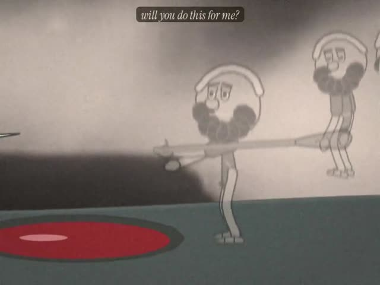
1:16 “will you do this for me?” scene test The scene rendered on its own before the episode was assembled, to check staging, scale and the line.
scene test The scene rendered on its own before the episode was assembled, to check staging, scale and the line.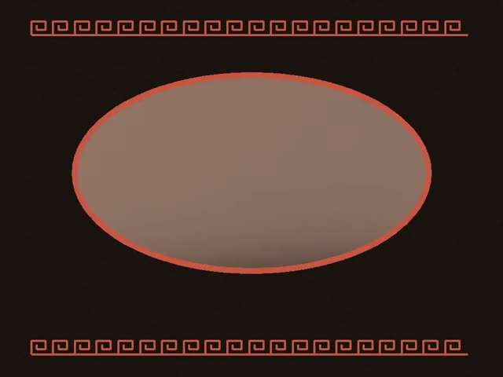
1:35 check frame from this scene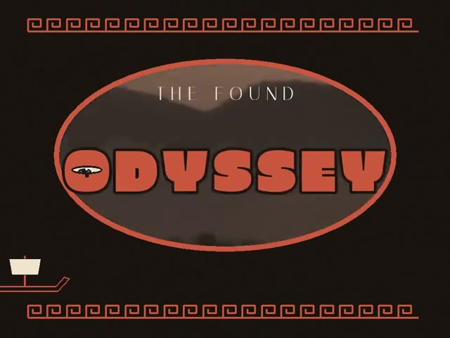
1:40 check frame from this scene- Part
- Cold open · the trench
- The line
- "will you do this for me?"
- The gesture
- Odysseus kneels and pours, and the blood is the first colour. Elpenor comes first, unburied and grey, carrying his oar. On the line he holds the oar out, handle first.
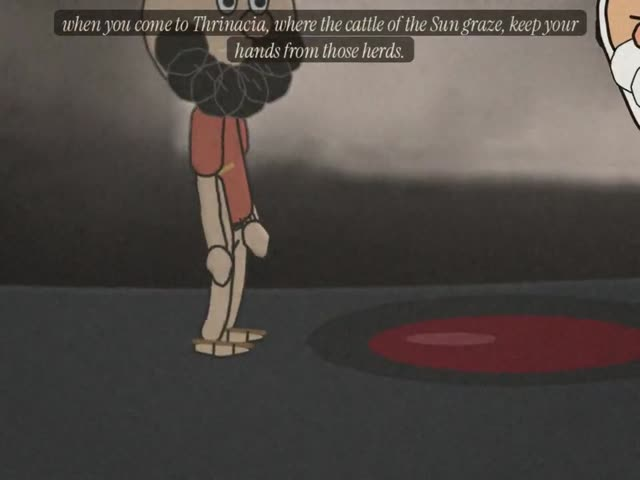
2:31 “keep your hands from those herds.” scene test The scene rendered on its own before the episode was assembled, to check staging, scale and the line.
scene test The scene rendered on its own before the episode was assembled, to check staging, scale and the line.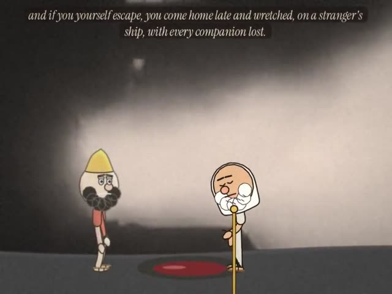
2:55 check frame from this scene- Part
- I · Tiresias
- Sign
- Op 34a, Opsign
- The line
- "keep your hands from those herds."
- The gesture
- The blind seer drinks and gets his colour. While he prophesies, the herds of the Sun appear as dark shapes in the fog behind him (Western Cattle Sequence, 1936). The frame closes on Odysseus's feet at the edge of the blood, and he takes one step back.
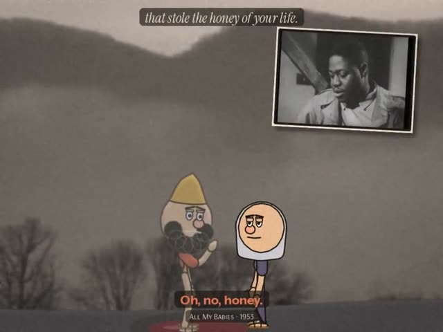
3:50 “My going killed you, mother.”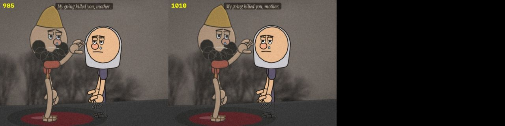
scene test The scene rendered on its own before the episode was assembled, to check staging, scale and the line.- Part
- II · the mother
- Sign
- Fe 8, Fetish
- The line
- "My going killed you, mother."
- The gesture
- His hand goes up toward her face and stops short of it, and the frame holds on the gap. Then he tries to hold her three times; each time his arms close through her and she loses more of her colour.
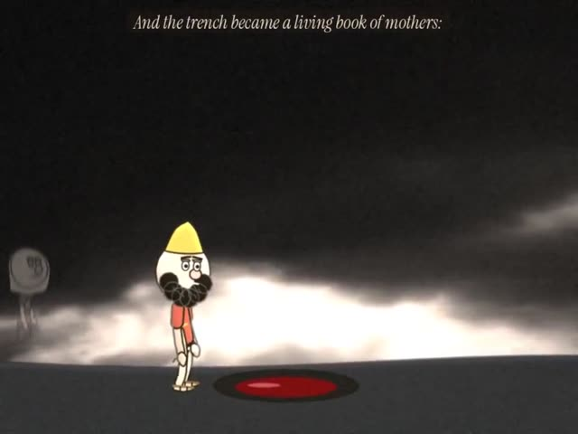
4:19 the start of this part, just after its card scene test The scene rendered on its own before the episode was assembled, to check staging, scale and the line.
scene test The scene rendered on its own before the episode was assembled, to check staging, scale and the line.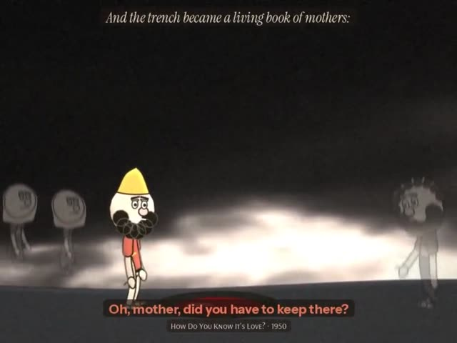
4:25 check frame from this scene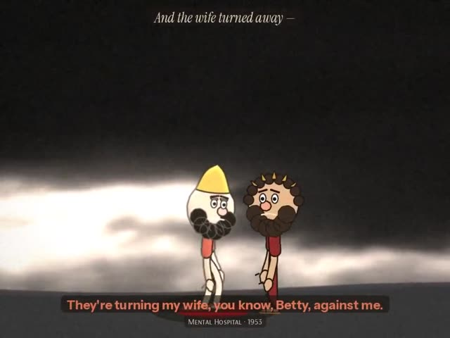
4:50 check frame from this scene- Part
- III · Agamemnon
- Sign
- Il 10, Index of lack
- The line
- "she would not even draw down his eyelids"
- The gesture
- The king never blinks. Odysseus reaches up and draws his fingers down over the king's eyes, and they stay open.
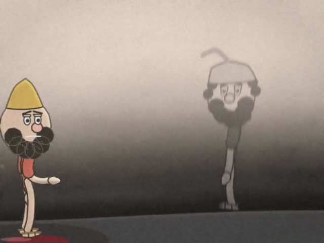
6:39 “the shade answered nothing, and went away in silence among the dead” scene test The scene rendered on its own before the episode was assembled, to check staging, scale and the line.
scene test The scene rendered on its own before the episode was assembled, to check staging, scale and the line.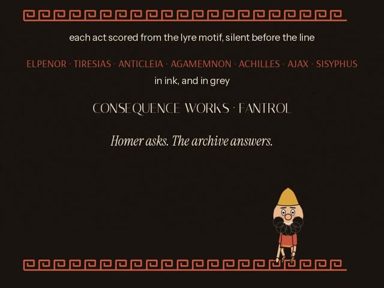
7:25 check frame from this scene- Part
- IV · Achilles and Ajax
- Sign
- Ba 41, Bodies of attitude
- The line
- "the shade answered nothing, and went away in silence among the dead"
- The gesture
- The scene is set in a white field. Achilles drinks, and his colour leaves with him when he strides away. Ajax stands apart the whole time and never drinks. On the line he turns away and walks off until the white takes him.
- Part
- After the credits
- The gesture
- On a tilted grey hillside, Sisyphus's stone gets away from him and rolls back down past him.
The previously segment uses Episode 4's own line, "To the house of Death?".
 check frame Check frame 6
check frame Check frame 6 check frame Check frame 25
check frame Check frame 25 check frame Check frame 60
check frame Check frame 60 check frame Check frame 130
check frame Check frame 130Sound
This part is about the sound. Watch with it on.
- Each act has its own score, built from the series' lyre motif, quieter under the voices and silent before the line.
- The small sounds belong to the gestures:
- the pouring;
- the crying of the dead;
- drinking;
- air through his arms at each embrace;
- Ajax's footsteps fading as he goes;
- the stone rolling back.
Observed and generated
This part separates what came from the archive from what was made here.
- Every spoken line comes from the Found Odyssey CALL tracks for Book 11. The words and their order are unchanged; only the selection and the pauses were chosen (
ody/ep5/cut.py). - The answers are The Found Odyssey's matches. The answer after each line plays as a caption, without an inset, so the close-up holds.
- The plates are from the cineosis-lab library, graded to cold black and white:
- The River (1937): the trench and Tiresias;
- Valley Fog (2006): the mother and Sisyphus;
- Stormy Clouds Sequence (2007): Agamemnon;
- Dust Storm (1936): Achilles and Ajax;
- Western Cattle Sequence (1936): the herds.
- Generated: all drawing and animation, the ghost treatment, the score and the sound effects.
- New to the cast, drawn in the same ink renderer: Elpenor's shade, Tiresias, Anticleia, Agamemnon, Achilles, Ajax and Sisyphus.


Files
The code, if you want to open it.
- Ghost and colour layer:
ody/ep5/craft5.py(built onody/ep4/craft.py). - Scenes:
ody/ep5/s_*.py. - Title, cards, credits and assembly:
ody/ep5/furn5.py. - Rig worlds:
crash/m_e5*.js.